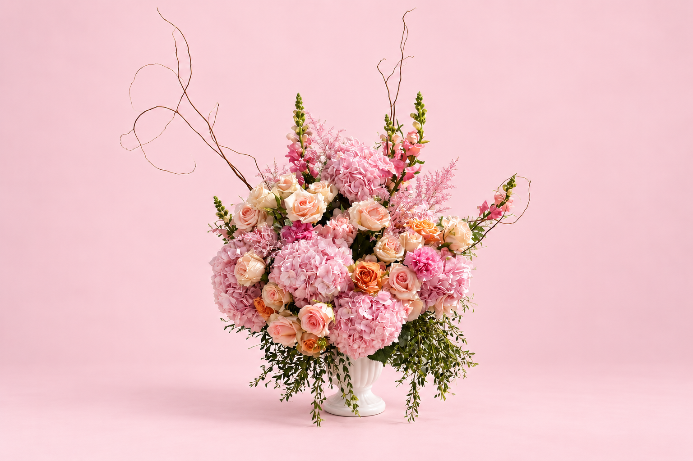

Fresh, editorial arrangements for weddings, private events, and everyday moments — each one built by hand, right here in San Diego. A few recent favorites from the studio:

Floral Design
Fresh, editorial arrangements for weddings, private events, and everyday moments — each one built by hand, right here in San Diego. A few recent favorites from the studio:
Also hosting the event yourself? You're welcome to ask about pairing this with Blush Catering — entirely optional, and never required.